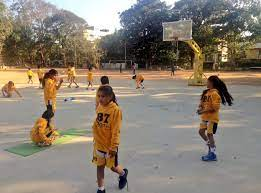

NBA Academy India

NBA Basketball School is a network of tuition-based basketball development
programs open to male and female
players from outside the U.S. ages 6-18. NBA Basketball Schools
have been launched in Argentina, Australia, Brazil, China,
Dominican Republic, Greece, India, Italy, Jordan, Kuwait, Lithuania, Mexico,
Spain, Uruguay and the
UAE. The NBA Basketball School
curriculum is designed to help players, parents, coaches, and organizations
better understand the process of improvement and development.
Sankalp Basketball Academy

Sankalp Sharirik Shikshan Sanstha was founded by a qualified basketball coach,
Azad Singh. This academy is better known as Sankalp Basketball Academy.
Address American Excelsior School Sector - 43, Gurgaon, Haryana, India 122007
Address American Excelsior School Sector - 43, Gurgaon, Haryana, India 122007
B7 Sports Basketball Academy

Founded in 2007, B7 Sports Management's main focus is in extending full Sports Management Services
to quality adhering clients on three verticals Consulting,
Event Management & Training Academy/Club. Through the magic of sport we intend
to touch the lives of our society for the better.
Gopalan Sports Centert

Gopalan Sports Center (GSC) is an established, state-of-the-art, indoor
and outdoor multisport facility, professionally run by Gopalan Enterprises.
It is situated in the heart of Whitefield- a buzzing
residential area and IT hub of the Silicon Valley of India, Bangalore.
Dribble Academy building

DAF was founded in 2016 by renowned basketball coach and skill development
trainer Pradyot Voleti withjust 4 children, 2 bamboo poles and a hoop
in a makeshift dirt court in the village of Gejha, Noida. He is a
clinical psychologist by qualification but his passion for
basketball led him to seek out the best basketball trainers
from around the world.